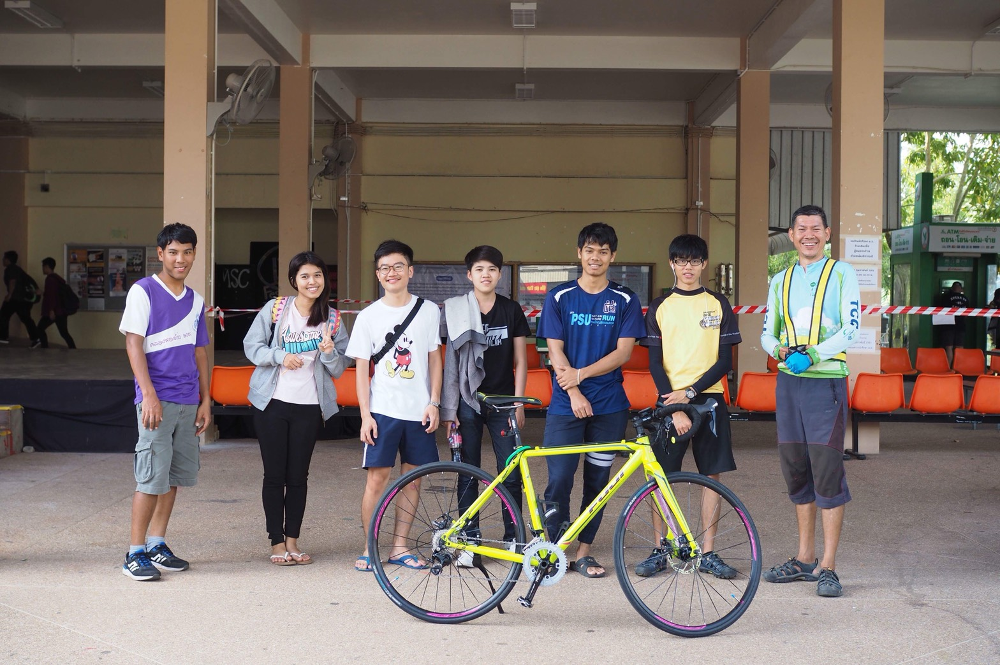
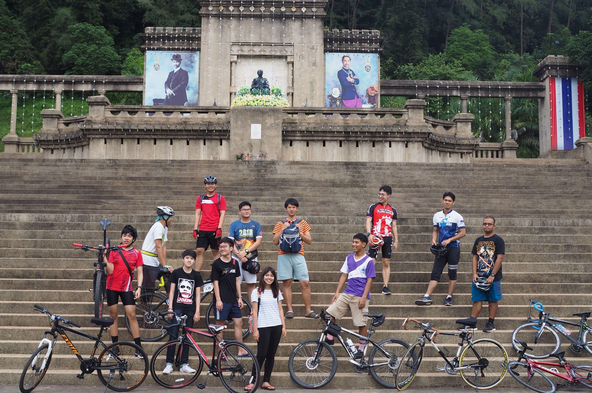
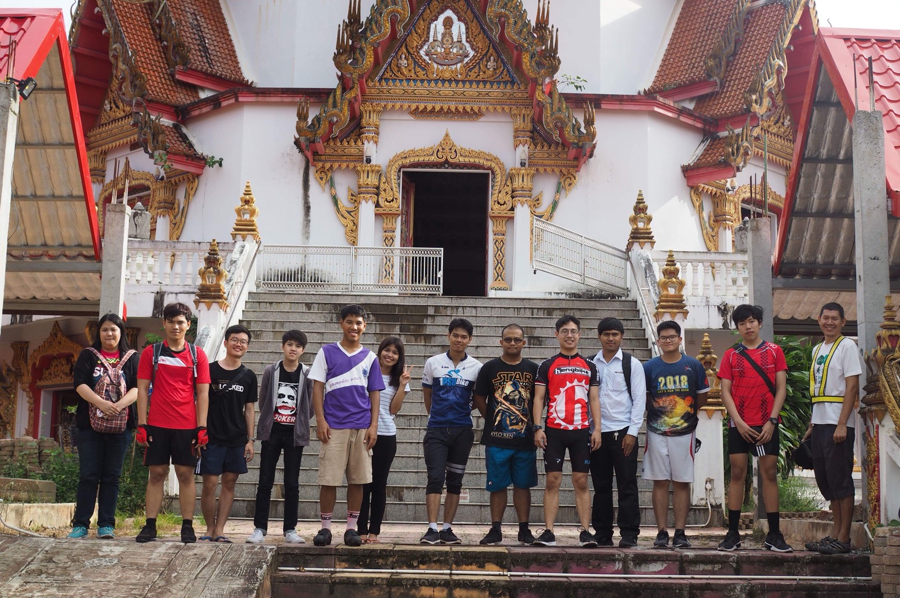
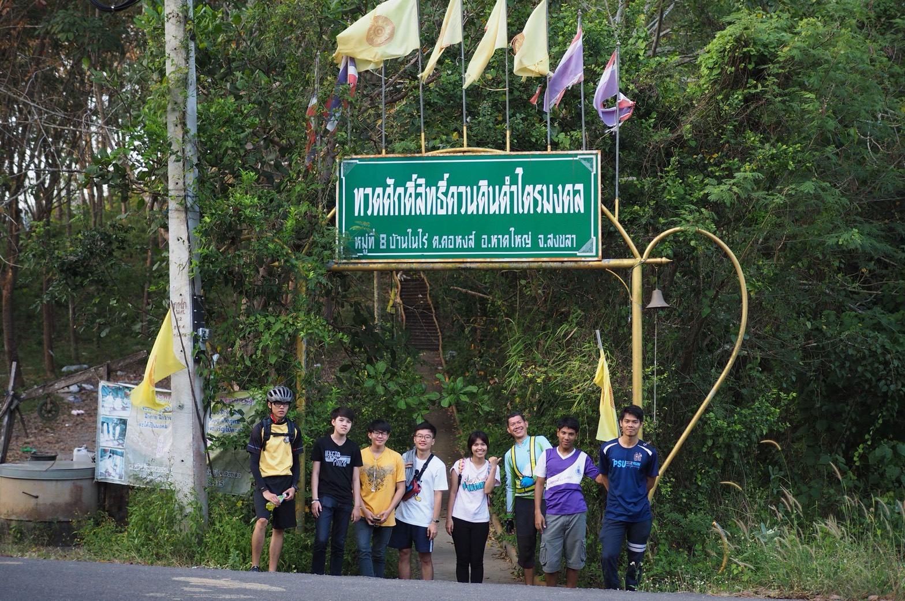

การเข้าเรียนในรั้วมหาวิทยาลัยเป็นอะไรที่ทุกคนต้องเริ่มปรับตัวใหม่ให้เข้ากับสังคมในมหาวิทยาลัยได้ นักศึกษาซึ่งมาจากต่างสถานที่ต่างสถานศึกษาจะได้รับประสบการณ์ใหม่ๆพร้อมๆกันการเรียนการสอนในรั้วมหาวิทยาลัยนั้นต่างจากการเรียนใรระดับมัธยมเป็นอย่างมาก มีจำนวนชั่วโมงเรียนที่น้อยลง มีตารางเรียนที่ไม่ต่อเนื่องในตลอดทั้งวัน นอกจากนี้ยังมีอิสระในการเลือกลงวิชาเรียนต่างๆได้ด้วยตัวเอง แม้กระทั่งการทำกิจกรรมต่างๆในมหาวิทยาลัยจะไม่มีการบังคับเหมือนตอนอยู่ในโรงเรียน แต่จะมีชั่วโมงหรือทรานสคริปที่เราต้องเขากิจกรรมเพิ่อที่จะเก็บชั่วโมงกิจกรรมให้ครบ การที่จะได้ทรานสคริปหรือชั่วโมงกิจกรรมครบให้เร็วที่สุดนั้นคือการได้เข้าร่วมชมรมและฉันได้เลือกที่จะเข้าร่วมชมรมจักรยาน
ที่เลือกเข้าชมรมจักรยานนั้นเป็นเพราะว่า ชอบที่จะปั่นจักรยานและเป็นการได้ออกกำลังกายอีกด้วย การได้เข้าชมรมจักรยานทำเราได้เพื่อนเพิ่มมามากมาย และได้ทำกิจกรรมหลายๆอย่าง ด้ปั่นไปไหนหลายๆที่ที่ไม่เคยไป เช่น การได้ทำบุญที่วัด
ไปเยี่ยมชมพิพิธภัณฑ์ต่างๆที่อยู่ในหาดใหญ่ หรือไปสวนสาธารณะเพิ่มขึ้นไปชมวิวทิวทัศน์อันสวยงามของเมืองหาดใหญ่ หรือแม้กระทั่งการจัดกิจกรรมแข่งขันกีฬาภายในชมรม
ไม่ได้ทำให้เราแข่งขันกับเพื่อนอย่างๆเดียวแต่ทำให้เราได้แข่งขันกับตัวเองด้วยเพราะเราต้องคอยพัฒนาทักษะของตนเองอยู่เสมอๆ
แม้กระทั่งการทำกิจกรรมต่างๆในมหาวิทยาลัยจะไม่มีการบังคับเหมือนตอนอยู่ในโรงเรียน แต่จะมีชั่วโมงหรือทรานสคริปที่เราต้องเขากิจกรรมเพิ่อที่จะเก็บชั่วโมงกิจกรรมให้ครบ การที่จะได้ทรานสคริปหรือชั่วโมงกิจกรรมครบให้เร็วที่สุดนั้นคือการได้เข้าร่วมชมรมและฉันได้เลือกที่จะเข้าร่วมชมรมจักรยาน
ความรู้
ความสามรถ
ทักษะการทำงาน